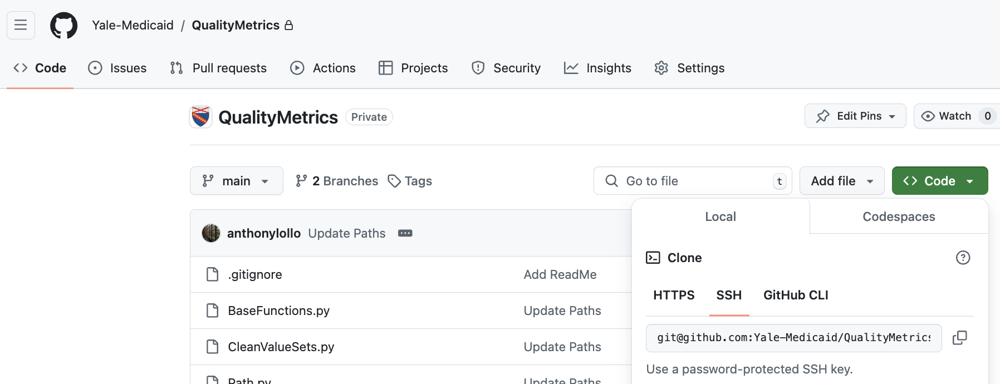

Coding Collaboration
We will use git to collaboratively develop analyses. This vignette will use T-MSIS projects as a working example, but the practices apply elsewhere.
On Milgram, the most up to date, stable, version of the libraries will be found in /gpfs/milgram/pi/medicaid_lab/code/ on the main branch, while researcher specific development branches can be stored in your own project directory.
Always include a .gitignore
Code will be pushed remotely to the Yale-Medicaid organization on GitHub. Repositories must be initialized with .gitignore files which ignores:
- all common data file extensions (.parquet, .xlsx, .dta, .sas7bdat)
- files which display data for exploratory analyses (.ipynb)
- objects that can be used to recreate raw data (.Rdata, targets files)
You can find a template .gitignore here. This file tells git to track the structure of the repository without tracking any individual files in the trunk/ folder.
Set up
Quickstart for Git on Milgram
Generating SSH Key
This saves you from having to type your password or provide a token every time. YCRC provides a thorough guide on using and generating SSH keys, the main steps of which we outline here. If you've already generated SSH keys (say, to SSH into Milgram through the terminal), you can skip the generation steps.
Within a terminal in Milgram type ssh-keygen. Press enter to save the keys in the default location /home/yourusername/.ssh/id_rsa, and create some passphrase as an extra layer of protection. The public key, saved in ~/.ssh/id_rsa.pub is what we share. NEVER SHARE THE PRIVATE KEY, which is stored in the similarly named file without the .pub suffix.
You can display the contents of the public key with cat ~/.ssh/id_rsa.pub, which will show a very long string beginning with something like ssh-rsa. Copy the entire outut (including the ssh-ra part).
Add SSH Key to GitHub
Now you need to add that public key to your GitHub Account. Instructions are provided by GitHub.
- Click on your account icon
- Click on Settings
- Click "SSH and GPG keys" under "Access" on left hand menu
- Click "New SSH Key"
- Give it some descriptive name, paste the output from
cat ~/.ssh/id_rsa.pubinto the Key box - Click "Add SSH Key"
Now when you clone a repository, you can use the SSH remote URL.
Existing Projects
Cloning a Repository
Navigate to the desired repository within Yale-Medicaid on Github. Click on the green <> Code button in the to right and copy the SSH url to your clipboard.

Within Milgram, use the terminal to navigate to the directory where you'd like to clone this repository. This is very likely /home/NETID/project/. From there type git clone URL_YOU_COPIED_ABOVE, which should begin cloning the directory with messages like:
Cloning into 'QualityMetrics'...
remote: Enumerating objects: 14, done.
remote: Counting objects: 100% (14/14), done.
remote: Compressing objects: 100% (11/11), done.
remote: Total 14 (delta 3), reused 13 (delta 2), pack-reused 0 (from 0)
Receiving objects: 100% (14/14), done.
Resolving deltas: 100% (3/3), done.
Navigate into that directory in the terminal. You're likely on the main branch (since you cloned from there), which you can confirm with git branch.
Since you don't want to develop on the main branch create a new branch for development and switch to it: git checkout -b NEW_BRANCH_NAME. You should get a message Switched to a new branch 'NEW_BRANCH_NAME'. Try to make the name descriptive if the branch is for a specific task.
Replicating the Environment
Python
The repository should have an environment.yml file which indicates the packages and exact versions required by the project. We need to ensure everyone is working with the same versions to avoid issues with depricated methods or changes between versions.
You can replicate this environment using miniconda. Within Milgram navigate to the project directory, and within a terminal type:
This will create an environment with a name based on the name: attribute in the environment.yml file. You need to use this environment when you are testing changes.
R
If you're using renv, open the project in an RStudio Server session and type renv::restore() in the console.
New Projects
Python
TODO
R
We highly recommend starting your R projects with the template repository. Do this on GitHub, then clone the repository onto Milgram.
Contributing
Git 101
If you've never used Git, work through GitHub's introduction. When collaborating on code, it's important to stay organized!
You can check the status of your current branch with git status. If there are no modified files and everything is up to date you will see:
On branch anthony-dev
Your branch is up to date with 'origin/anthony-dev'.
nothing to commit, working tree clean
Otherwise, if you've been making changes, in this example creating a new file called test_add.py, git status will indicate the files which have changed or added:
Your branch is up to date with 'origin/anthony-dev'.
Untracked files:
(use "git add <file>..." to include in what will be committed)
test_add.py
nothing added to commit but untracked files present (use "git add" to track)
Because this is a new file, we will need to add it to tracking:
And when you are ready to commit several changes you would
Alternatively, all changes to already tracked files can be commited with
Check before you commit
Remember to check the files being added and information being committed to ensure no sensitive information is pushed to the remote.
- If using
-awhen committing, take the time to ensure you know exactly which files have changed as this commitsallmodifications. - I recommend against using a command like
git add -Ato add new files to tracking. Better to explicitlygit add file_nameas an added layer of security. (The .gitignore is a backstop...)
Finally, committed changes can be pushed to the remote with git push.
Updating environment.yml
Commit updates to environment.yml alongside code
If you install or update a package, environment.yml must be updated in the same commit alongside the code which required the change. This ensures that the version history always has the correct environent capable of running the project without errors.
Occassionally you will need to add additional package dependencies or you will want to update packages to more recent versions. When this happens, you need to update environment.yml so others can maintain consistency. To do this, navigate to the project where environment.yml exists and within a terminal:
module load miniconda
conda env export --no-builds --name ENV_NAME | grep -v prefix > environment.yml
where you replace ENV_NAME with the name of the environment you are looking to export. This will overwrite the environment.yml file, so you can commit any changes alongside the code and push to git. When others pull these changes, they can replicate this environment from the updated file.
This will fail if the environment already exists locally, so instead update